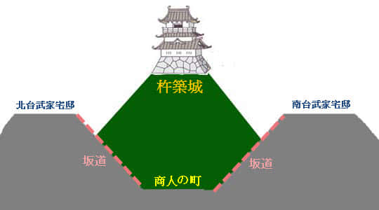

日本北九州春天賞櫻遊
杵築城下町: 勘定場の坂
杵築城的風景太美了, 瀏覽的時間比預算多出了很多, 餘下的杵築行程要加快一點腳步了。步出杵築城, 循來時的路返回城山公園山腳入口的馬路。
剛才看了山麓上的杵築城, 接著的行程是參觀杵築城的城下町, 也是大部份旅客來杵築最主要目的。
城下町
城下町是日本的一種城市建設形式, 以領主居住的城堡為中心所建立的城市。日本城下町有一個特點, 就是只有領主居住的城堡才有城墻保護, 而平民居住的街道則沒有。在古代, 當領主佔據某一地方後, 下面的直屬武士隊、商人和市民被強制定居於城下一帶, 形成所謂的城下町。
日本現在仍然存在很多城下町, 例如佐賀城下町、柳川城下町等等比較熟悉的城下町, 但隨著社會的發展, 大部份風貌已經不再。而杵築城下町是日本保留最完整的城下町, 大部份當年的建築物還保留至今, 步行其中, 彷彿回到了古代。
杵築城下町除了是日本保留最完整的城下町外, 更是日本唯一以三明治型規劃的城下町。所謂三明治型, 其實用凹字型來形容更為貼切。遊覽前必須先了解清楚杵築城下町的凹字型(三明治型)建設, 否則便白走一遍。
杵築城下町 – 武家宅邸老街、坂道、商人の町組成的城下町
杵築城下町是由杵築城下對出的「商人の町」街道, 以及商人の町兩旁坡地上的「北台」及「南台」所組成的。在古時, 武士居住區、平民居住區和寺院區是被分開的, 所以, 武士宅邸都建於山坡上的「北台」及「南台」, 而平民便居住在山坡下的「商人の町」街道。為了連接「北台」、「南台」和「商人の町」之間的交通往來, 便在斜坡上建設了很多坂道 – 勘定場の坂、醋屋之坂和志保屋の坂等等坂道, 形成了完整的杵築城下町。

勘定場の坂
城山公園入口處的馬路斜對面便是勘定場の坂的入口。
爬上勘定場の坂便是北台武家屋敷。這裡半個旅客也沒有, 腳步不期然會放慢下來。相信當年因為馬匹和轎夫也經常使用坂道, 所以階級特別寬闊。
坂道雖然陡斜和很長, 但感覺很易走, 不一會便來到北面山坡上的北台。
從北台上俯瞰勘定場の坂和對面的城山公園。看不到山麓上的杵築城, 好像被城山公園茂盛的樹林遮擋著。懸想當年馬車和轎車列隊而下, 場面熱鬧。

哈哈~~ 北台這位置剛好看到杵築城天守閣的頂層露出在樹林上面。這樣可以更清楚實地了解杵築城下町的建設形式。
北台武家屋敷老街
走上北台的頂部, 迎面是一條和勘定場の坂闊度差不多的筆直老街, 這裡兩旁仍然保留當年武士居住的房屋。
日本北九州春天賞櫻之旅
- 杵築、別府一天遊行程安排
- 旅館步行往大分火車站
- 大分駅乘特急 SONIC 列車往杵築駅
- 杵築駅乘巴士往杵築市
- 杵築市觀光案內所步行往杵築城
- 杵築城下的城山公園
- 杵築城 - 日本最小的城堡
- 杵築城下町 - 勘定場の坂
- 北台武家屋敷老街
- 南台 - 酢屋の坂、商人の町、志保屋の坂
- 南台武家屋敷老街 - 飴屋の坂 - 商人の町
- 岩鼻の坂 - 北台 - 番所の坂 - 杵築市中心
- 午餐於杵築市故郷お食事処鄉土料理
- 杵築巴士中心乘巴士返回杵築駅
- 杵築駅乘普通火車往別府
- 別府駅乘巴士往鉄輪區地獄
- 鉄輪-みゆき坂-地獄めぐり通り-海地獄
- 別府海地獄巡禮
- 地獄蒸工房鐵輪、足蒸し、やすらぎ通り
- 鉄輪乘巴士往湯の川
- 湯の川步行往湯けむり展望台
- 湯けむり展望台俯瞰別府市和鉄輪地獄帶
- 湯けむり展望台 - 湯の川 - 別府塔
- 別府塔附近搵食艱難 - 最終在寶來軒晚飯
- 別府塔展望台欣賞夜景
- 別府駅乘特急 SONIC 列車返回大分